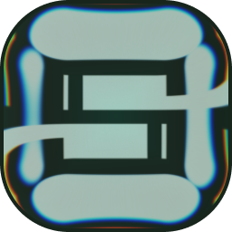

Open a new tab
Close the current tab
Switch to the previous tab
Switch to the next tab
Quick search — clears the search bar and focuses it
Focus the search bar
Cycle window modes: windowed → maximized → fullscreen
Toggle auto-hide for the navigation bars
Type one of these + space or semicolon to search directly on YouTube
Type one of these + space to search on Twitch
Click the star to bookmark the current page. Bookmarks appear as icons in the navbar.
Load Chrome extensions (like Dark Reader or AdBlock) from the puzzle icon. Built-in ad blocker included.